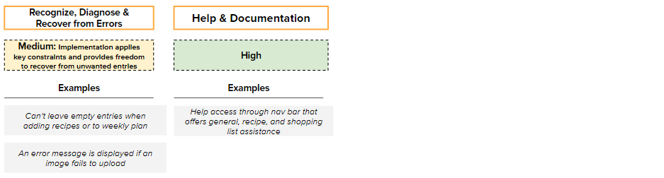

As highlighted in our initial proposal, the app’s tagline is to “Cook more. Eat Healthier. Shop Smarter.” Our design approach focuses on considering key parts of the user experience and implementing / improving features that help it better achieve that promise.
Recipe Keeper Presentation & Demo
Executive Summary
Tool Selection
Recipe Keeper is an all-in-one recipe organizer, shopping list, and meal planner available across devices. The app allows users to store all their recipes in one place, so that they can better plan their meals and grocery needs. Our redesign aimed to optimize the current design for the target users, adults aged 20-40 who have busy schedules and are looking to minimize their time spent on tedious cooking-related tasks.Improved and Implemented Feature Overview
Through our knowledge of design principles, we implemented new features and states to improve the overall experience of the user. Some of the core experiences that we improved include Adding recipes, interacting with them, comparing them, representing all the data in useful ways, and weekly planning. The implementation of these features helps to better satisfy users and make the app more flexible and efficient to use. In particular, we organized the redesign into the following states:- Sous-Chef (Voice Assistant)
- Planner
- Search
- Comparison
- Meal Recommender
- Bulk Add
- Ingredient Scanner
When considering the underlying information such as quantitative, qualitative, and text data, our redesign was focused on presenting the data in an easy-to-understand manner. For example, within the comparison feature, when a user is comparing the nutritional information of two different recipes, as the information is quantitative, the representation is able to highlight the “better” recipe based on the statistic.
Our redesign also takes into account the cognitive abilities and limitations of users while using the app. For instance, while cooking, users may not be able to read instructions or interact with the app using their hands. To address this, we have included “Sous Chef”, a voice and audio feature that allows users to access recipes using voice commands.
Our heuristic evaluation and overview of design principles showed significant improvements in the match with the real world by understanding the user's actual needs and context in which they use the app. While there is still room for certain improvements as discussed, the redesign provides a strong foundation for an app that truly allows users to “Cook more. Eat Healthier. Shop Smarter”.
Navigational Map
Description of Screens:
The following screens have been outlined in the order in which the prototype works (click each image to enlarge).


Home:
The home screen features all recipes. Users can click into the “Main Dish” quadrant to access the recipe comparer feature.Search:
Users can click on “Advanced Search” to access this functionality. They are then able to filter recipes based on words, preparation, and/or nutritional information using the accordion style menu.Recipe Comparer:
Users can drag and drop two recipes to compare their nutritional makeup in a side-by-side fashion.Meal Planner:
Users can then click the “Meal Planner” button on the left navigation tab to access this feature. They can press the “+ Add Meal”' button to manually add meals to the weekly planner. This involves selecting the date, meal type, and recipe. Alternatively, they can press and hold the spacebar to auto-populate the entire week with meals based on the user’s preference. Note, for the purposes of the Figma, this interaction entails clicking a space bar (vs. holding it down).Recommender:
When clicking back into Home, the user is served a recommendation based on the time of day and their eating preferences. They can choose to view the recipe or hit cancel.Bulk Add:
Users can select the “+ New Recipe” option from the left navigation bar, and choose “Import recipe from website” to access this feature. They are then able to bulk add multiple recipes (at one time) by clicking on the “+” button to input more links.Recipe Scanner:
To access the recipe scanner, the user must select the “Shopping List” option on the left navigation bar. They are then able to upload a photo. If the photo fails to upload, they are encouraged to retry the operation. Once the image has been successfully uploaded, they can click into it in order to identify the different ingredients. They are then able to select/tick these ingredients and hit “add” to populate their shopping list with the chosen items.Sous Chef Mode:
Users can press the “Sous Chef Mode” option on the left navigation bar to access the voice assistant. They are then able to walk through a sample recipe from start to finish. Note, for the purposes of the Figma, the voice commands are not operational and are purely illustrative.Figma Storyboard:
Design Principles
1) Familiarity
The Principle of Familiarity is a design principle that suggests that interfaces should be designed to be familiar and similar to other interfaces that users are already comfortable with. This can be achieved by incorporating design elements, patterns, or interactions that users are already familiar with from other apps or systems. The Principle of Familiarity is applied through the voice-based assistant interface, which is similar to those found in other voice-based apps like Siri. Additionally, the app incorporates a familiar interface for the magnifying function, making it easier for users to understand how to zoom in on images, which they may have previously experienced on other online shopping apps. The advantage of using familiar interfaces is that it reduces the cognitive load on the user and makes it easier for them to understand and use the new interface.2) Knowledge
The Knowledge design principle emphasizes the importance of designing interfaces that make use of users' existing knowledge and mental models to improve their ability to learn and use the interface. By incorporating familiar concepts and language, the learning curve is reduced, and the interface becomes more intuitive and easier to use. In the case of our app, we have applied the Knowledge design principle by leveraging a commonly used side-by-side comparison model and measurement units that most users are already familiar with. This approach enables users to quickly and easily understand and interpret the comparison results, without having to learn new concepts or units. Moreover, through user interviews, we discovered that holding the space bar is a mental model that most users are already familiar with. We utilized this knowledge to match users' expectations and ease the learning curve in the app. By leveraging users' existing knowledge and mental models, our team has successfully created a more user-friendly interface that is easier to learn and enhances the overall user experience.3) Visibility
The Visibility design principle highlights the importance of making key information and actions visible to the user. By doing so, users can easily understand what actions are available and what the consequences of those actions will be. In the context of our app, the Visibility design principle is applied by providing clear and concise copyright to the user when interacting with the voice assistant (i.e, “ask me a question"). By doing this, users are made aware of the possible actions that can be performed, and what the consequences of those actions will be. This enables users to have a better understanding of how to interact with the voice assistant and ensures that they are able to use it effectively. Moreover, the app leverages the Visibility principle by highlighting important nutrition information among two recipes in different colors, making it both visible and accessible to the user. This helps users quickly identify the key metrics that differentiate two recipes, enabling them to make informed decisions about which recipe to select.4) Feedback
The Feedback design principle emphasizes the importance of providing users with clear and timely feedback to help them understand the consequences of their actions and how to use the interface more effectively. In our app, this principle is applied in several ways to improve the user experience. One way the Feedback design principle is applied is by providing clear visual feedback to the user when the app is listening to their instructions. Animated sound waves are displayed to indicate that user input is being recorded. This helps to bridge the gulf of evaluation, as the user is able to see that the app is actively listening and responding to their input. Additionally, when the app is thinking or waiting for a command, the sound waves become static, providing further feedback to the user that the app is not ready for their input. This feedback helps to bridge the gulf of execution, as the user is able to quickly understand when they should or should not be providing input to the app.5) 80/20 Rule
The 80/20 rule, also known as the Pareto principle, suggests that 80% of the effects come from 20% of the causes. In design, this principle can be applied by focusing on the most important and relevant features that will provide the majority of the value to users. In the context of our app, the 80/20 rule is applied to the comparison tab. Instead of overwhelming users with every possible nutritional statistic, the tab focuses on the most important and commonly compared metrics such as calories, protein, and fat. This allows users to quickly and easily compare the nutritional content of different meals without being overloaded with information. By focusing on the most important metrics, the app is able to provide the most value to users.6) Flexibility
Flexibility suggests that interfaces should be designed in a way that allows users to customize their experience based on their preferences and needs. In the context of our app, the principle of flexibility is applied in various ways. One example is the comparison tab, which allows users to customize the nutritional statistics they want to compare, depending on their personal goals or dietary needs. This gives users the flexibility to choose what information is most important to them, instead of being limited to a predefined set of statistics. Another way flexibility is used in our app is through the ability to add multiple recipes at once from different sources. This feature makes it more flexible and efficient for users who want to save time by adding all their desired recipes at once, regardless of their source. By providing flexibility, our app is able to accommodate a wider range of user preferences and needs.7) Affordance
Affordance is a design principle that refers to the visual or physical characteristics of an object or interface that suggest how it should be used. In the context of our app, affordance is used through the use of the magic wand icon, which suggests to the user the actions or tasks that can be performed with that icon, thereby bridging the gulf of evaluation and execution. For example, the magic wand icon is used to indicate that the user can perform a search for recipes. This visual cue bridges the gap between the user's intentions and the execution of the action, making the interface more intuitive and user-friendly. By using affordance, our app is designed to be more easily understood and used by a wide range of users, regardless of their technical expertise or prior experience with similar interfaces.8) Progressive Disclosure
The Progressive Disclosure design principle suggests that information should be presented gradually, only revealing additional information as it becomes necessary or relevant to the user. This principle is applied in our app by dividing the search criteria into three distinct sections using an accordion-style menu (previously, all the filtering options were listed upfront). By doing so, users are presented with only the most relevant search criteria upfront, reducing the risk of information overload and allowing users to focus on the criteria that matter most to them. As users interact with the search criteria, additional options become available, allowing them to refine their search and find the perfect recipe.9) Feedforward
The Feedforward design principle refers to providing users with information or feedback before they take an action, helping them to make informed decisions and better understand the system they are interacting with. In the context of our recipe app, using Feedforward would involve informing the user about the expected outcome of opening the app at different times of day and providing them with recipe recommendations that are tailored to their needs and preferences. By using the Feedforward design principle and displaying a message such as "Vlad, it’s a great time to cook lunch!" the app can provide users with relevant and personalized recipe recommendations, enhancing their overall experience with the app. It also makes the user aware of the expected outcome of opening the app at different times of day, which helps he/she understand why they are seeing certain recipe recommendations and how the app is tailored to their needs.10) Action - Magic Lens/Ingredient Scanner:
In the Ingredient Scanner feature, the action of using the microscopic lens to view a recipe’s ingredients has the following properties:- Presence - Implicit: Although the availability of the lens isn’t advertised to the user, it is assumed that the user know it exists based on it being a familiar mental model/interaction that users have already been exposed to (e.g. similar to how you zoom into an image of a clothing article on a retailer’s website).
- Agency - Manual: The user expresses an action using her ‘hands’, as though she is reaching into the interface to zoom and thereby manipulate the representation.
- Granularity - Atomic: The zooming motion cannot be broken down into sub-steps.
- Focus - Direct: The user directly moves the magnifying glass to act on the representation of interest (i.e. the recipe image).
- Flow - Continuous: The action occurs over a span of time in a fluid manner
- Timing - User-Paced: The user is not constrained by any time limitations.
11) Reaction - Magic Lens/Ingredient Scanner:
In the Ingredient Scanner feature, the reaction of using the microscopic lens to view a recipe’s ingredients (i.e. the close up snapshot of the image) has the following properties:- Flow - Continuous: The reaction occurs over a span of time in a fluid manner, as different parts of the image are zoomed into
- Transition - Stacked: Only the current state (i.e. close up snapshot of the ingredient) is visible to the user.
- Spread - Self-Contained: The action only causes a change to occur in the representation (i.e the recipe photo) that is of interest.
- State - Altered: A new representation is not created or deleted, rather the existing image is modified by enlarging its size.
12) Constraints
The principle of constraints refers to the use of design elements to restrict or limit the actions that users can take when interacting with an HCI artifact. The goal of this principle is to make it easier for users to understand how to use the system and to prevent them from making mistakes or getting stuck. Our prototype applies this design principle by disabling the “+” button, until the user has provided at least one link when using the “import recipes from website” feature. By doing so, we make it clear to the user that links are required in order for the bulk import process to begin.13) Proximity
The principle of proximity stipulates that objects that are placed close together tend to be perceived together. Similarly, objects that are far apart, tend to be perceived separately. This principle is used in many instances within the application. For example, in our Ingredient Scanner, the user is able to view the list of ingredients from the uploaded image. The white space between the ingredients helps the user easily identify which items belong to which category ( e.g dairy, meat, produce, etc.). Items within the same category have minimal white space, and categories are differentiated based on headings and larger amounts of whitespace in between. Separating the ingredient categories visually helps the user think through the list in a logical manner, increasing the usability of the application.14) Symbolic Sign
In the redesign of Recipe Keeper, the cooking voice assistant is represented by a chef’s hat. By clicking on this symbolic sign (located in the left navigation bar), users are able to access “Sous-Chef Mode”. This is an example of a sign with an symbolic relationship to its referent, since the chef’s hat denotes a sous-chef, which in turn signifies a helper/assistant of sorts. This symbolic relationship makes it clear that the user can access the voice-based helper by clicking on this sign.15) Hick's Law
An example of Hick's Law in the context of our Recipe Keeper is the design of the Advanced Search feature. If you provide users with too many search options, it may be overwhelming and result in decision paralysis, making it harder for users to find the recipe they are looking for. To mitigate this, we visually limited the number of search filters options available by leveraging an accordion style menu. This separates the search filters into 3 sections: Words, Preparation, and Nutrition, that can only be accessed by clicking into the respective sections. By hiding filters, we effectively reduced the number of choices that the user needs to consider.16) Error Prevention
The design principle of error prevention suggests that interfaces should be designed in a way that reduces the likelihood of errors and helps users recover from them when they occur. In other words, the interface should be designed in a way that prevents mistakes from happening in the first place, or at least makes it easy for users to correct them. In the context of our app, the use of the space bar as an auto-fill function in the Meal Planner is an example of error prevention. By providing a feature that allows users to quickly and easily fill in the meal planner, you reduce the likelihood of errors that could occur if the user manually entered information. Additionally, by making the process of auto-filling an explicit action that requires holding down the space bar, you also prevent accidental filling and further reduce the likelihood of errors.17) User Control and Freedom
The User Control and Freedom design principle emphasizes giving users the ability to undo or reverse their actions, allowing them to recover from mistakes and explore different options without fear of irreversible consequences. In the Meal Planner section of our app, this principle is demonstrated by the ability for a user to undo their selection. If a user accidentally selects a recipe for a certain day of the week, they can simply tap the "Undo" button to remove it from the meal plan. This feature gives users the freedom to explore different recipe options and make changes to their meal plan without fear of making permanent mistakes.18) Consistency
The design principle of consistency is effectively implemented in the app, thereby increasing its overall usability. Firstly, aesthetic consistency is applied to the system via the use of the same design language (e.g. orange accents) and use of flat design principles (minimalistic feel, non-filled icons, etc.). Secondly, functional consistency is evident through the actions and behaviors of the app. Given that this is a desktop app redesign, we have mimicked the way many front-end apps operate and leveraged the same pop-ups/windows that appear when interacting with the app.19) Mapping and Location
The Mapping and Control design principle refers to the relationship between controls and their effects, where the layout of an interface should correspond to the function it serves. This means that the design of the interface should be intuitive and easy to understand, allowing users to quickly and easily find the controls they need and understand how they affect the system. The Mapping and Control design principle is applied through the comparison tool that allows users to drag and drop two meals to compare. The drag and drop functionality is intuitive and easy to use, providing a clear mapping between the user's action and the resulting comparison of the meals. Additionally, when the user is presented with the nutritional comparison of the two recipes, the layout is clear and logical, with the columns of the food being compared displayed side-by-side, making it easy for the user to see how the two meals compare.20) Reflective Design
The tabular representation comparing the nutritional makeup of two recipes is a form of reflective design because understanding information within the data table requires mental effort from the user. We chose this representation because it allows for more valuable information to be presented to the user. For example, details of the calories, protein, fat, and sugars are shown. However, it must be noted that reflective design makes it more difficult to identify trends within the data. Nonetheless, for the purposes of the data we seek to display, it is appropriate.Final Heuristic Evaluation
Our prototype was evaluated based on Nielsen Norman's set of 10 usability heuristics. We aimed to satisfy and meet the criteria by incorporating aforementioned designed principles, however, effectiveness ranges.
Visibility of System Status
Our app redesign excels in providing users with clear and concise feedback regarding their actions and the system's status, ensuring a seamless and intuitive user experience. The Sous-Chef mode, which vocalizes recipe steps, allows users to follow along without needing to interact with the app manually. This mode ensures users are aware of their progress within a recipe, making the cooking process more enjoyable and efficient. The circular progress bar appears when the app processes requests such as autocomplete in the meal planner. This visual feedback helps users understand that their input is being processed and allows them to anticipate task completion. The app also delivers clear confirmation feedback upon the successful completion of actions, such as adding a recipe, bolstering user confidence in the system. Additionally, warning messages are displayed when users encounter issues or errors, guiding them towards resolving problems and maintaining a smooth user experience. The app highlights essential information for each recipe, including dietary restrictions, to keep users informed about crucial aspects of their meal choices. This feature streamlines the decision-making process by enabling users to quickly identify recipes that meet their specific requirements.Match with Real World
We employ user-friendly language, intuitive organization, and recognizable visual cues. By using familiar terms like "grocery list" and "meal plan" instead of technical jargon, the app ensures users can quickly comprehend and navigate its various features. The organization of recipes and ingredients aligns with users' real-world experiences, as ingredients are thoughtfully grouped by category, and recipes are displayed by cuisine type. This approach enables users to efficiently find what they need, whether they're shopping or exploring new culinary options. Additionally, the app leverages easily recognizable visual cues and metaphors that match users' mental models. Examples include using a shopping cart icon for the grocery list feature and a calendar icon for the meal planner. These visual elements contribute to an intuitive user experience, allowing users to understand the functions of each feature and navigate the app with ease.User Control & Freedom
Our prototype implements the heuristic of User Control & Freedom by providing an "Undo" or "Cancel" button that allows users to easily reverse their actions, such as deleting a recipe or adding an ingredient to their shopping list by mistake. Another example is if the autofill feature adds too much information or fills in the meal planner for a day that the user doesn't want to fill in, they can easily navigate to the undo button and revert. If the user wants to edit the automatically filled information partially, they can do so easily by adjusting the parameters of the meal plan. The ability to press the 'back', 'undo', and 'cancel' buttons to reverse actions gives the user control and freedom. They are not forced to delete everything and start from scratch.Consistency and Standards
Incorporating the heuristic of consistency and standards, our prototype features a navigation bar on the side of the interface with similar and recognizable icons, providing a consistent and familiar experience for users. The icons and their placement are easily recognizable, allowing users to quickly find and access the features they need. Moreover, the prototype uses industry standard symbols and language for common actions, such as using a trash can icon to indicate delete or a square house to indicate the home page. This consistency in design and language not only helps users to understand and navigate the system but also makes it easier for them to transfer their knowledge from similar systems to Recipe Keeper.Error Prevention
Incorporating the heuristic of error prevention, our prototype features several design elements that prevent errors before they occur. For instance, we restricted input options like date formatting to prevent users from entering invalid or inconsistent data. This ensures that the system receives accurate information, reducing the chances of errors or discrepancies. Furthermore, in the weekly plan section, the prototype does not allow users to move forward unless they have entered all the required information. This feature prevents users from creating incomplete plans. It is worth noting that while our prototype met the criteria for the heuristic of error prevention, its effectiveness in preventing all types of errors is only medium. While the design elements prevent users from entering invalid or inconsistent data, they do not prevent users from entering impractical recipes, lists, or plans. The prototype only alerts users if certain input fields are left empty, but it does not provide guidance on the practicality or feasibility of the content entered. Therefore, users may still encounter errors or difficulties if they input impractical or unrealistic plans.Recognition over Recall
The redesign includes several features that support recognition over recall, such as the autofill weekly planner, which presents users with suggestions for their meal plan based on their past recipe usage. Additionally, the categorization of recipes by time of day and cuisine provides users with a familiar and easily recognizable structure for organizing their recipes. Finally, the ability to compare recipes by nutritional information, with highlighting of the better meal option, allows users to make quick and informed decisions about what to cook without having to remember specific details about each recipe. This is important because users can quickly become overwhelmed with too many options and information to remember, and a design that supports recognition over recall can reduce cognitive load and improve user satisfaction.Flexibility & Efficiency
The redesign includes several features that promote flexibility and efficiency, such as keyboard shortcuts and touch gestures that allow users to quickly navigate the app and perform common actions. The ability to mark recipes as favorites allows users to quickly access their most frequently used recipes, while the smart meal recommender helps users find new recipes based on their dietary preferences and cooking habits. Finally, the Sous Chef Mode, which uses voice assistance to guide users through recipe preparation, allows users to cook hands-free and efficiently. These features contribute to a flexible and efficient design, which is important for users who value their time and want to achieve their cooking-related tasks with ease.Aesthetic
The redesign is consistent with the previous design in terms of color scheme and layout, but the new user flows and state management help to reduce clutter on individual pages. By organizing the app into clear and concise user flows, users are able to easily navigate between different pages without feeling overwhelmed by too much information on a single page. Additionally, the consistent navigation bar and overall design aesthetic help to create a cohesive and visually pleasing user experience. Recognize and Recover From Errors:
Our app makes it easy for users to easily identify and rectify issues they encounter. In addition to providing confirmation messages for successful actions, the app offers descriptive error messages to guide users in resolving problems. The implementation of key constraints and recovery options prevents unwanted entries and facilitates error correction. For instance, when users attempt to add recipes to their weekly plans, the app prevents them from leaving empty entries. This feature ensures that users include all necessary information, reducing the likelihood of mistakes. Similarly, the app displays error messages when issues arise, such as when images fail to upload. These messages not only alert users to the problem but also provide guidance on how to resolve the issue. By offering clear, actionable information, users can effectively recover from errors and continue using the app with minimal disruption.Help and Documentation
Incorporating the heuristic of help and documentation, our prototype features several elements that help users understand and navigate the system. Since there are many features in our tool, having instructions on how to use it is essential. To provide this guidance, the prototype includes a help button on the navbar that is easily accessible from any page. This button leads users to a comprehensive guide that explains how to use each feature and provides tips on how to optimize their experience. The guide is designed to be user-friendly and visually engaging, with clear step-by-step instructions and screenshots. Additionally, the guide is organized into sections that correspond to different features, making it easy for users to find the information they need.Discussion: Recommendations for Improvement
Improving Help & Documentation
Existing help is available by clicking "Help" in the navigation bar, which opens a window answering general questions about how to use different parts of the app. However, to improve the system, we recommend incorporating help and documentation into the user flows (both existing and newly added). A good way to do this would be to either create a tutorial mode with an assistant that provides guidance through message boxes, or when users hover over specific buttons, the system could explain how that button or feature works.
Improving Error Prevention and User Convenience
To improve user convenience and error prevention, we recommend incorporating more back buttons and allowing users to move between features quickly. Currently, features such as comparison or voice assistant (sous chef) need to finish their whole process before users can leave. This slows down the user experience and can lead to errors. By adding back buttons and allowing users to switch between features more easily, the system could become more user-friendly.
Wishlist Features
Reading recipes: when a user doesn't have a specific ingredient, a "Mark for Shopping List" button could be added. This feature would help connect different states of the app, improving flexibility and efficiency of use.
Picture upload/recognition: users could upload a picture of a dish, and the system could recognize what the picture shows through image analysis and trace it to different recipes online. This feature could save users time and provide a fun and innovative way to search for recipes.
Grocery list sorting: a feature that would allow users to sort the items in their shopping list by aisle category in the grocery store (i.e. poultry, dairy, etc.). This would help users organize their shopping trips and reduce the amount of time they spend in the store. This would make the grocery list functionality have a better match with the real world.